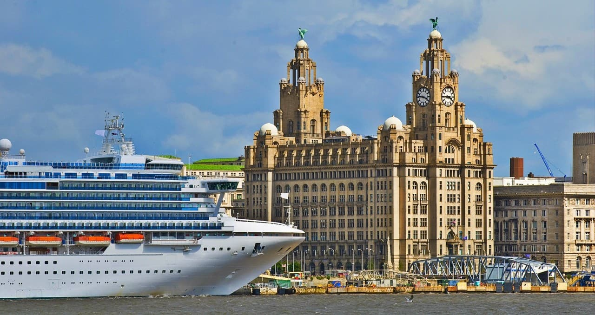
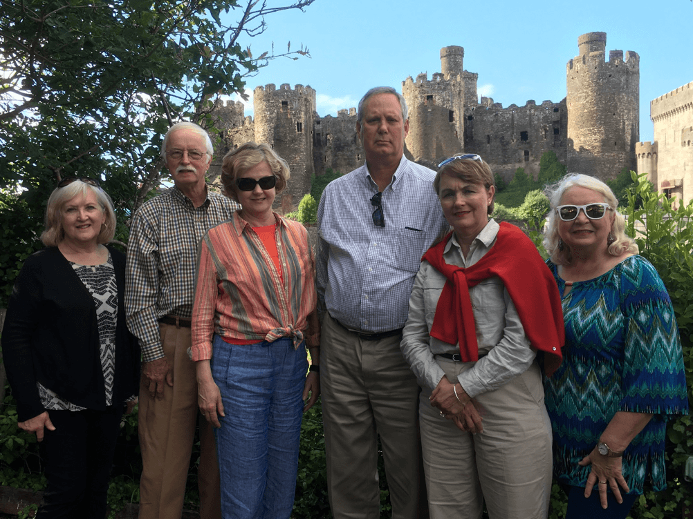

Holyhead and Liverpool Private Tours
- Quality Custom Designed Tours
- Professionally Trained Tour Guide
- Spacious Executive Touring Vehicles
“We are one of a few private tour operators in the world with a consistent 5 Star rating from our customers!”

- Home
- Cruise Tours
Our private tour experiences are regularly rated as “one of the best” or “favourite” tours of the whole cruise around the British Isles!

Step ashore and enjoy touring without the crowds with your very own Boutique Tour
We operate a very exclusive cruise tour programme for small private groups of cruise passengers at both Holyhead on the Isle of Anglesey and the port of Liverpool.
You can be assured of a friendly, professional and reliable private driver guided tour service with one of the best rated tours of the whole cruise around the British Isles!
Holyhead and Liverpool Private Tours
Why not book us for both ports of call!

A driver guide who understands cruise line operations
You can be confident that when you book with Boutique Tours that you not only have a knowledgeable and professional driver guide, but someone who understands cruise line operations.
Your driver guide has worked in the cruise industry for one of the world’s leading international cruise lines. He also worked as an official tour guide for Cunard Line aboard the famous QE2 and was more famously involved in creating and designing one of the very first Round Britain cruise itineraries for cruise ships to operate!
He carries over 35 years of travel industry experience, having also worked for some of the leading international tour operators.
You will find our well planned and designed tour itineraries provide you with the opportunity to discover more and often cover twice if not three times as much tour content than a cruise ship tour would offer you.
Plan your day ashore
How much time will you have in port?
Enter your ship’s times to see your time ashore and the tours that suit your port of call.
Choose your port of call to see your time ashore and the tours that suit it.
“Highly recommended” – Private Driver Guided Tours for Cruise Passengers
Cruise Tour Testimonials